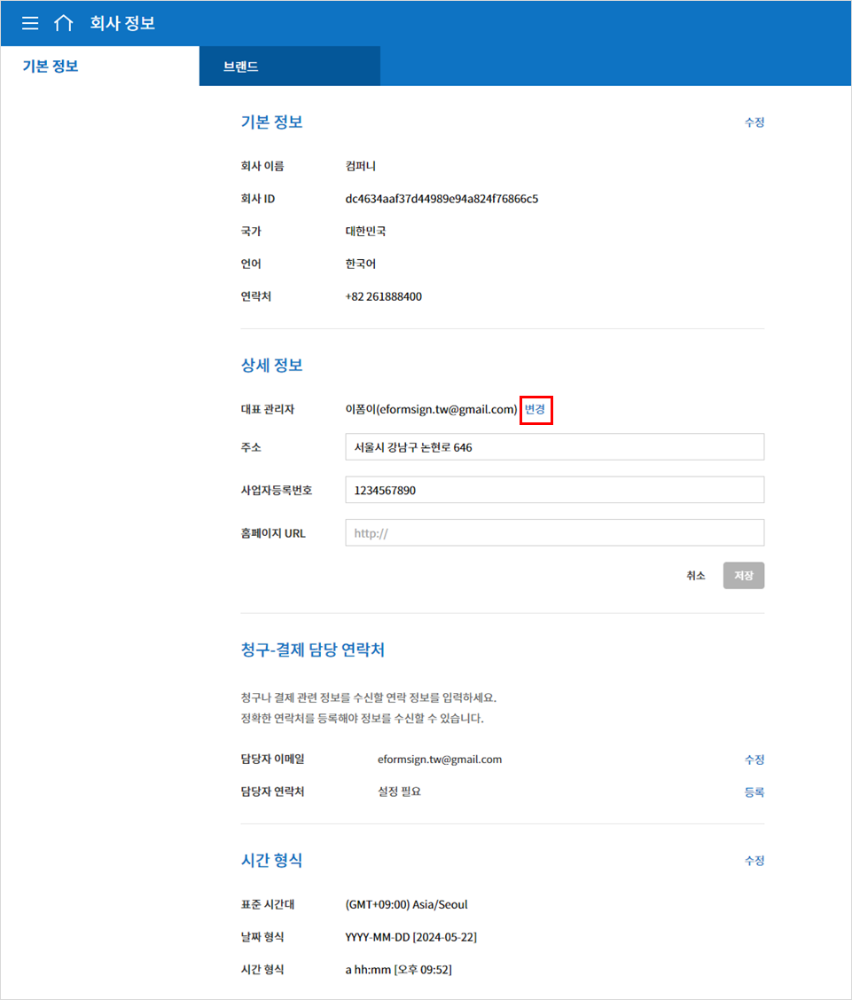
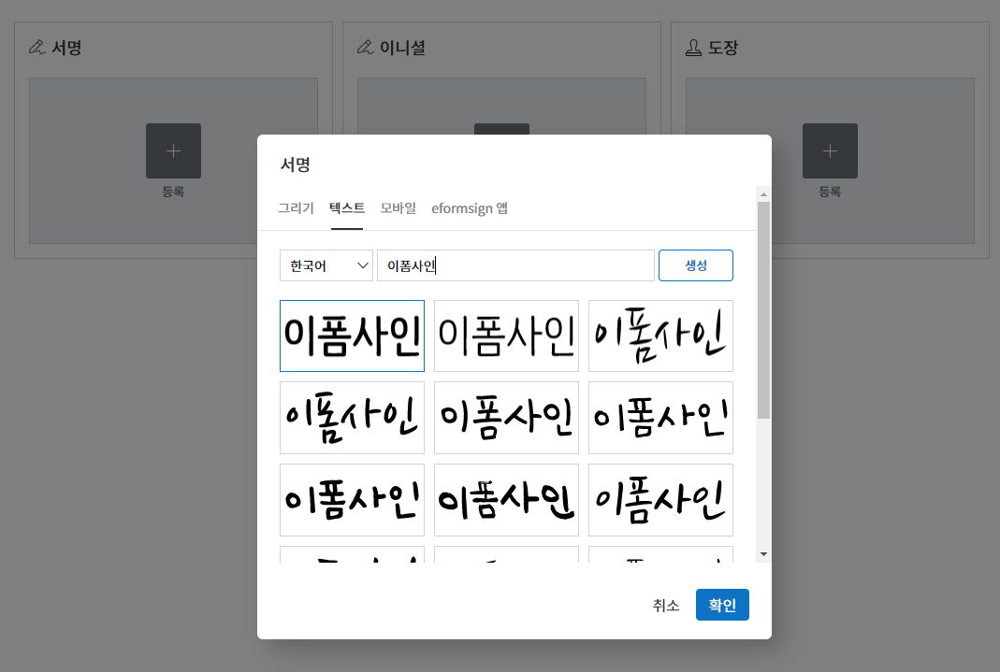
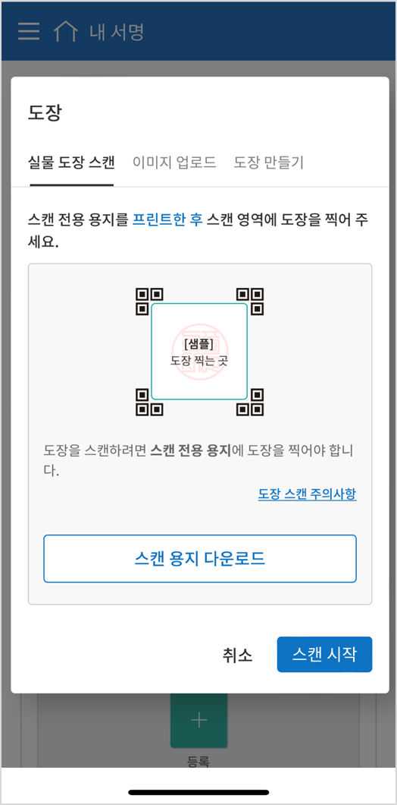

기본정보
대시보드
메뉴 구성
이폼사인에 로그인한 후 대시보드 화면 왼쪽 상단의 메뉴( ) 아이콘을 클릭하면, 아래와 같은 사이드바 메뉴가 나타납니다.
) 아이콘을 클릭하면, 아래와 같은 사이드바 메뉴가 나타납니다.
Note
메뉴는 사용자의 권한에 따라 다르게 나타납니다. 대표 관리자는 모든 메뉴를 볼 수 있으며, 모든 권한이 있습니다. 권한 설정에 관한 자세한 내용은 권한 구분을 참고해 주세요.
각각의 메뉴는 다음과 같습니다.
새 문서 작성: 내 PC에 저장된 문서 파일 또는 eformsign에 등록된 작성 가능한 템플릿 중 선택하여 문서를 작성합니다.
내 파일로 문서 작성: 미리 저장된 템플릿이 없더라도 내 PC에 저장된 문서 파일을 eformsign에 바로 업로드한 후 필요한 입력 항목을 문서 위에 추가하여 수신자에게 전송합니다.
템플릿으로 문서 작성: 문서를 작성할 수 있는 템플릿 목록이 조회되고, 템플릿을 선택하여 문서를 작성합니다.
내 문서 보관함: 내 파일로 문서 작성 중 문서 시작하기 전 단계에서 저장한 문서 목록을 볼 수 있습니다. 내 파일로 문서 작성을 통해 작성한 문서를 저장한 후 매번 새로 만들 필요 없이 템플릿처럼 활용할 수 있습니다.
문서함: 나와 관련된 문서 목록을 확인합니다.
처리할 문서함: 내가 처리해야 할 문서(다른 멤버가 나에게 요청한 문서), 템플릿으로 문서 작성을 통해 문서 작성 중 임시저장한 문서(초안), 멤버가 아닌 수신자에게 보낸 문서 중 문서 기한이 지나 재요청이 필요한 문서 목록을 볼 수 있습니다.
진행 중 문서함: 내가 작성 또는 처리한 문서 중 아직 완료되지 않은 문서 목록을 볼 수 있습니다.
완료 문서함: 내가 작성 또는 처리한 문서 중 완료된 모든 문서 목록을 볼 수 있습니다.
일괄 작성 문서함: 내가 일괄로 작성한 문서의 진행 상태 등 일괄 작성 문서에 대한 현황을 확인할 수 있습니다.
공유 문서함: 소유한 문서를 다른 멤버에게 공유하거나 공유 문서함에 접근 권한이 있을 경우 공유된 문서를 한눈에 확인할 수 있습니다.
휴지통: 문서함에서 직접 삭제한 문서 및 보관 기간이 지나 자동으로 삭제된 문서의 목록을 확인할 수 있습니다.
문서 관리: 문서 관리자 권한이 있어야만 접근 가능한 메뉴입니다. 문서 관리 권한이 있는 템플릿으로 만들어진 모든 문서를 조회할 수 있습니다. 단, 대표관리자의 경우, 모든 문서를 조회 및 관리할 수 있습니다.
일괄 작성 문서 관리: 문서 관리자 권한이 있어야만 접근 가능한 메뉴입니다. 문서 관리 권한이 있는 템플릿으로 일괄 작성된 문서를 조회할 수 있습니다. 단, 대표관리자의 경우, 모든 문서를 조회 및 관리할 수 있습니다.
내 서명: 내 서명을 등록하고 문서 작성 시 편리하게 서명란에 적용할 수 있습니다.
연락처: 자주 사용하는 외부 수신자의 연락처를 등록하고 관리할 수 있습니다.
템플릿 관리: 템플릿 관리자 또는 템플릿 생성 권한이 있어야만 접근 가능한 메뉴입니다. 템플릿 목록을 확인하고 템플릿을 생성 및 설정할 수 있습니다.
회사 관리: 대표 관리자와 회사 관리자 권한이 부여된 멤버만 접근 가능한 메뉴입니다. 회사 정보를 조회하고 수정할 수 있습니다.
회사 정보: 회사 정보를 확인 및 수정하고 대시보드, 이메일 등에 적용되는 브랜드 이미지를 설정할 수 있습니다.
그룹 관리: 멤버 그룹을 생성하거나 그룹 정보를 수정할 수 있습니다.
멤버 관리: 멤버를 초대하거나 멤버 정보를 수정할 수 있습니다.
권한 관리: 멤버별로 회사 관리자, 템플릿 관리자, 문서 관리자, 템플릿 생성 권한을 부여하고 관리할 수 있습니다.
회사 도장 관리: 법인인감, 사용인감 등 회사의 공식 도장을 등록하고 각 도장별 사용 권한을 설정할 수 있으며, 도장 사용 내역을 확인할 수 있습니다.
서명 방식 설정: 서명 시 서명 입력 방식을 제한 또는 허용할 수 있습니다. (텍스트 서명 및 도장 만들기 서명 입력 방식)
알림 템플릿 관리: eformsign에서 발송되는 이메일, SMS 알림 템플릿 목록을 확인하고 수정 또는 새로운 알림 템플릿을 추가할 수 있습니다.
사용자 정의 정보셋 관리: 회사, 그룹, 멤버에 대한 추가 정보를 입력하거나 수정할 수 있습니다.
보안 설정: 로그인 2단계 인증, 중복 로그인 제한 등 로그인 관련 보안 설정, IP 접속 제어 설정 등 계정 보호를 위한 보안 기능을 설정할 수 있습니다.
문서 보관 기간 설정: 회사 내에서 작성되는 모든 문서에 대한 보관 기간을 설정할 수 있습니다.
활동 이력 관리: 이폼사인 접속 이력, 정보 수정 이력, 다운로드 이력 등 이용자의 활동에 관한 이력을 확인할 수 있습니다.
커넥트: 대표 관리자만 접근 가능한 메뉴입니다. 외부 서비스와 연계하여 사용하는 기능을 확인할 수 있습니다.
파일 저장소: 드롭박스, 구글 드라이브, 박스, 원드라이브 계정을 연동하여 최종 완료된 문서가 자동 저장되도록 설정합니다.
분석 및 리포팅: 구글 스프레드시트, 오피스365 엑셀로 문서에 입력된 데이터가 자동 저장되도록 설정합니다.
API / Webhook: 이폼사인 API를 사용할 때 필요한 API 및 웹훅 키를 관리할 수 있습니다.
요금 관리: 요금제, 실시간 이용 현황 및 결제 내역을 조회하고 요금제나 결제 수단을 변경할 수 있습니다.
요금제: 사용 중인 요금제를 확인 및 변경할 수 있습니다.
실시간 사용 내역: 현재까지의 사용 내역 및 잔여 수량을 실시간으로 조회할 수 있습니다.
결제 내역: 최근 1년간의 결제 내역을 확인할 수 있습니다.
결제 수단 설정: 요금 결제 시 사용될 신용카드 정보를 등록할 수 있습니다.
이용 현황: 멤버별/그룹별/기간별 이용 현황을 조회할 수 있습니다. *일반 멤버는 내 이용 현황만 확인할 수 있습니다.
eformsign for MS Office 다운로드: MS 오피스 프로그램에서 템플릿을 생성하기 위한 MS Office용 이폼사인 플러그인(eformsign for Microsoft Office)을 다운로드합니다.
대시보드 화면 구성
이폼사인 로그인 후 나타나는 대시보드 화면은 권한에 관계없이 모두 동일하게 나타납니다. 대시보드에서 파일을 바로 업로드하고 문서를 작성하는 것은 물론, 등록된 템플릿을 확인하고 해당 템플릿으로 바로 문서 작성을 할 수 있습니다. 또한, 각 문서함과 템플릿으로 문서 작성 등 주요 메뉴로 바로가기를 제공합니다.

① 문서함 바로가기
처리할 문서함: 내가 처리해야 하는 문서의 수를 보여주며, 클릭 시 처리할 문서함으로 이동합니다.
진행 중 문서함: 현재 진행 중인 문서의 수를 보여주며, 클릭 시 진행 중인 문서의 목록을 확인할 수 있는 진행 중 문서함으로 이동합니다.
완료 문서함: 클릭 시 완료 문서함으로 이동합니다.
내 문서 보관함: 내 파일로 문서 작성을 통해 문서 작성 진행 중 문서 시작하기 이전에 저장한 문서의 수를 보여주며, 클릭 시 내 문서 보관함으로 이동합니다.
② 내 파일로 문서 작성하기
해당 영역에 파일을 드래그&드롭하면 바로 새 문서를 작성할 수 있는 내 파일로 문서 작성 화면으로 이동합니다. 내 컴퓨터에서 파일 선택을 클릭하면 내 파일로 문서 작성할 파일을 업로드할 수 있는 화면으로 이동합니다.
③ 템플릿으로 문서 작성하기
즐겨찾기한 템플릿, 최근에 사용한 템플릿, 최근에 업로드한 템플릿 순으로 표시됩니다. 해당 템플릿의 문서 작성 아이콘을 클릭하면 바로 문서를 작성할 수 있습니다. 템플릿 전체보기를 클릭하면 템플릿으로 문서 작성 화면으로 이동하여 모든 템플릿을 확인할 수 있습니다.

{kind=link}
{kind=link}
{kind=link}
{kind=link}
{kind=link}
기본 정보 확인 및 변경
이폼사인 가입 시 입력한 개인정보와 내가 등록된 회사의 정보는 사이드 메뉴 우측 상단 아이콘( )을 클릭하여 확인할 수 있습니다.
)을 클릭하여 확인할 수 있습니다.
{kind=link}
회사 변경: 내가 소속된 회사가 여러 개일 경우 회사 변경을 클릭하면 회사의 목록이 나타납니다. 변경할 회사를 클릭하여 소속 회사를 변경할 수 있습니다.
내 정보: 이폼사인 가입 시 등록한 내 개인정보를 확인 및 수정할 수 있으며, 내가 소속된 회사의 정보를 확인할 수 있습니다.
로그아웃: 이폼사인에서 로그아웃할 수 있습니다.
내 정보
내 정보 > 개인 정보
{kind=link}
- 개인 정보
회원가입 시 입력한 이름, 이메일 또는 아이디, 비밀번호 및 연락처를 확인 및 수정할 수 있습니다.
- 보안
내 계정으로 로그인하면 등록된 이메일로 알림이 전송되도록 설정할 수 있습니다.
- 소셜 계정 연결
구글, 페이스북의 소셜 계정을 새로 연결, 계정 추가, 연결 해제를 할 수 있습니다.
- 알림
마케팅 정보 수신 동의 여부를 확인할 수 있으며, 동의 및 해제할 수 있습니다.
- 회원 탈퇴
이폼사인의 회원 탈퇴를 하고자 하는 경우 화면 하단의 eformsign 탈퇴하기를 클릭하여 회원 탈퇴를 할 수 있습니다.
내 정보 > 회사 정보
{kind=link}
- 기본 정보
내가 소속된 회사의 회사명, 국가, 언어, 연락처 등 기본 정보를 확인할 수 있습니다.
- 상세 정보
내가 소속된 회사의 주소, 사업자 등록번호, 홈페이지, 대표 관리자 이름 및 이메일 등 상세 정보를 확인할 수 있습니다.
Note
내 정보에서는 회사 정보를 확인만 할 수 있으며, 회사 관련 정보의 수정은 회사 관리 > 회사 정보 메뉴에서 할 수 있습니다. 회사 정보 수정은 대표 관리자 또는 회사 관리 권한이 있는 멤버만 가능합니다.
- 회사 탈퇴
소속된 회사에서 탈퇴하고자 하는 경우, 화면 하단의 이 회사 탈퇴하기를 클릭하여 탈퇴할 수 있습니다. 이 회사 탈퇴하기를 클릭하면 소속된 회사의 목록이 표시되고, 목록 중 선택하여 해당 회사로부터 탈퇴를 진행할 수 있습니다.
Important
일반 멤버가 소속 회사에서 탈퇴할 경우 개인의 계정은 유지되며 다른 회사에 가입하거나 신규로 회사를 생성할 수 있습니다.
대표 관리자가 회사 탈퇴 시 회사가 삭제됩니다. 회사 삭제를 하지 않고 회사를 탈퇴하려면 대표 관리자를 다른 멤버로 변경한 후 회사를 탈퇴해야 합니다.
대표 관리자 변경은 회사 관리 > 회사 정보 > 기본 정보에서 할 수 있습니다.
회사 정보 수정
내 정보에서 확인 가능한 회사 정보는 회사 관리 > 회사 정보에서 수정할 수 있습니다.
Note
이 작업은 대표 관리자 또는 회사 관리자 권한이 필요합니다.
등록된 회사 정보를 수정하는 방법
사이드바 메뉴에서 회사 관리 > 회사 정보로 이동합니다.

회사 정보 > 기본 정보 화면에서 수정하고자 하는 정보의 수정을 클릭합니다.
내용을 수정하고 수정 완료 후 저장 버튼을 클릭합니다.

브랜드
회사의 로고와 심볼을 등록하여 이폼사인의 대시보드와 사이드바 메뉴에 표시되도록 할 수 있으며, 문서 요청 시 등 발송하는 이메일 템플릿 등에 표시할 수 있습니다.
Note
로고와 심볼의 차이
로고와 심볼 모두 회사를 대표하는 이미지입니다. 로고는 대체로 브랜드명을 기재하는 가로로 긴 형식, 심볼은 이미지만으로 표현한 정사각형 형식입니다.
권장 사이즈
로고: 512 x 128의 가로 투명 이미지
심볼: 120 x 120의 정사각형 투명 이미지
회사 로고 등록하는 방법

사이드바 메뉴에서 회사 관리 > 회사 정보로 이동합니다.
브랜드 탭을 클릭합니다.
브랜드 이미지 > 로고 영역의 이미지를 클릭합니다.
이미지 업로드 팝업창이 뜨면 내 PC에 저장된 로고 이미지 파일을 선택하여 업로드합니다.
이미지 크기: 가로 512px, 세로 128px 권장
파일 크기: 최대 300KB
파일 형식: PNG, JPG, JPEG, GIF
화면 오른쪽 상단의 저장 버튼을 클릭합니다.
대시보드, 사이드 메뉴 상단에서 변경된 로고를 확인합니다.
권한 구분
이폼사인은 멤버에게 권한을 부여할 수 있으며, 템플릿별 권한 포함하여 총 7단계로 세분화된 권한별 관리가 가능합니다. 사용자별 권한은 다음과 같이 구분됩니다.
대표 관리자
회사의 대표자로 이폼사인 사용에 대한 모든 권한이 있습니다.
회사 관리자
회사 관리 메뉴에 접근할 수 있습니다. 회사 정보, 멤버, 그룹 등을 관리할 수 있으며 멤버 초대 및 문서 이관 등을 할 수 있습니다.
템플릿 관리자
템플릿 관리 메뉴에 접근할 수 있습니다. 템플릿을 수정, 배포 및 삭제할 수 있습니다.
문서 관리자
문서 관리 메뉴에 접근할 수 있습니다. 문서 관리 권한을 부여받은 문서를 열람하고 다운로드할 수 있으며, 관리 범위에 따라 문서를 취소 또는 제거할 수도 있습니다.
템플릿 생성 권한
템플릿 관리 메뉴에 접근할 수 있습니다. 템플릿 관리 메뉴에서 파일을 직접 업로드하거나, MS Office에서 바로 템플릿을 만들어 새로운 템플릿을 등록할 수 있습니다.
Note
관리자 및 템플릿 생성 권한은 회사 관리 > 권한 관리 메뉴에서 설정할 수 있습니다. 대표 관리자는 모든 권한에 대해 설정 가능하며, 회사 관리자는 회사 관리자를 제외한 권한을 설정할 수 있습니다.
템플릿별 권한
템플릿별로 멤버 또는 그룹에게 다음과 같은 권한을 부여할 수 있습니다.
템플릿 사용 권한
템플릿 사용 권한은 템플릿으로 문서를 작성할 수 있는 권한을 말합니다. 권한이 있는 멤버의 템플릿으로 문서 작성 화면에 해당 템플릿이 나타나며 문서를 작성할 수 있습니다.
템플릿 수정 권한
템플릿 수정 권한은 해당 템플릿을 수정할 수 있는 권한입니다. ❗템플릿 수정 권한은 템플릿 관리자 권한이 있는 멤버에게만 부여할 수 있습니다.
대표 관리자
대표 관리자는 가입 시 회사를 생성한 사용자가 대표 관리자로 등록되며, 모든 권한이 있는 최고 관리자입니다.
대표 관리자는
모든 메뉴에 접근할 수 있습니다.
템플릿을 생성, 수정, 배포, 삭제, 관리할 수 있습니다.
모든 문서를 작성, 열람, 취소 등 관리할 수 있습니다.
멤버별 권한을 부여할 수 있습니다.
대표 관리자 변경이 필요한 경우 다른 멤버에게 권한을 위임할 수 있습니다.
❗대표 관리자가 탈퇴할 경우, 회사가 삭제됩니다. 회사를 삭제하지 않고 계정 탈퇴를 하려면 대표 관리자를 다른 멤버로 변경해야 합니다.
대표 관리자 변경하는 방법
회사 관리 > 회사 정보로 이동합니다.
상세 정보의 수정 버튼을 클릭하면 대표 관리자 계정 옆에 표시되는 변경을 클릭합니다.
 보안을 위해 계정 비밀번호를 입력한 후 다음을 클릭합니다.
대표 관리자 변경 팝업창에서 대표 관리자로 변경할 멤버를 검색 및 선택합니다.
확인 버튼을 클릭하면 대표 관리자가 변경됩니다.
{kind=link}
{kind=link}
{kind=link}
회사 관리자
회사 관리자는 회사 관리 메뉴에 접근 권한을 가지며, 회사와 관련된 정보 및 멤버/그룹 등의 정보를 열람, 수정, 삭제 등을 할 수 있습니다.
회사 관리자 권한은 멤버 관리 또는 권한 관리 메뉴에서 설정할 수 있습니다.
회사 관리 > 멤버 관리에서 회사 관리자 설정하는 방법
사이드바 메뉴에서 회사 관리 > 멤버 관리로 이동합니다.
멤버 목록에서 회사 관리 권한을 부여할 멤버를 선택합니다.
오른쪽 멤버 정보 상세 보기 화면 하단의 권한에서 회사 관리를 체크합니다.
저장 버튼을 클릭합니다.
{kind=link}
회사 관리 > 권한 관리에서 회사 관리자 설정하는 방법
사이드바 메뉴에서 회사 관리 > 권한 관리로 이동합니다.
회사 관리자 권한 설정 화면에서 우측 상단의 회사 관리자 추가 버튼을 클릭합니다.
회사 관리자로 설정할 멤버를 검색 후 선택합니다.
확인 버튼을 누르면 해당 멤버가 회사 관리자로 추가됩니다.
{kind=link}
{kind=link}
{kind=link}
Note
회사 관리자 권한을 삭제하려면, 우측 상단의 휴지통 아이콘을 클릭한 후 권한을 삭제할 멤버를 선택하고 삭제 버튼을 클릭합니다.
템플릿 관리자
템플릿 관리자는 템플릿 관리 메뉴에 접근 권한을 가지며, 템플릿을 수정, 배포, 삭제할 수 있습니다.
Note
템플릿을 등록한 템플릿 관리자는 해당 템플릿의 소유자가 됩니다. 한 회사에 여러 명의 템플릿 관리자가 있는 경우 템플릿 소유자와 템플릿 관리자가 다를 수 있습니다.
템플릿 관리자가 템플릿 소유자가 아닌 경우 해당 템플릿의 설정 보기와 템플릿 복제만 할 수 있습니다.
템플릿 관리자 권한은 멤버 관리 메뉴 또는 권한 관리 메뉴에서 설정할 수 있습니다.
회사 관리 > 멤버 관리에서 템플릿 관리자 설정하는 방법
사이드바 메뉴에서 회사 관리 > 멤버 관리로 이동합니다.
멤버 목록에서 템플릿 관리 권한을 부여할 멤버를 선택합니다.
오른쪽 멤버 정보 상세 보기 화면 하단의 권한에서 템플릿 관리를 체크합니다.
저장 버튼을 클릭합니다.
{kind=link}
회사 관리 > 권한 관리에서 템플릿 관리자 설정하는 방법
{kind=link}
{kind=link}
{kind=link}
{kind=link}
문서 관리자
문서 관리 메뉴에 접근할 수 있습니다. 문서 관리자 권한을 부여받은 템플릿으로 생성된 문서를 열람하고 다운로드 받을 수 있으며, 관리 범위에 따라 문서를 취소 또는 제거할 수도 있습니다.
문서 관리자 권한 설정 방법
사이드바 메뉴에서 회사 관리 > 권한 관리로 이동합니다.
권한 메뉴에서 문서 관리자를 클릭합니다.
우측 상단의 문서 관리자 추가 버튼을 클릭합니다.
문서 관리자로 설정할 멤버를 검색 후 선택합니다.
확인 버튼을 누르면 해당 멤버가 문서 관리자로 추가됩니다.
목록에서 해당 멤버 우측에 설정 버튼을 클릭해 관리 문서에 대한 상세 설정을 합니다.

Note
관리 문서 설정 방법
문서 관리자에게 관리 권한을 부여할 문서 조건을 설정합니다.
문서 조건 선택: 문서 작성자와 문서 종류를 선택하면 선택한 작성자가 작성한 문서에 대한 관리 권한이 부여됩니다. 예를 들어 ‘인사팀’에서 작성한 ‘근로 계약서’에 대한 문서 관리자를 설정할 경우, 작성자에 ‘인사팀’, 문서 종류에 템플릿 목록의 ‘근로 계약서’를 선택합니다. 작성자와 문서 종류에 대해 상세 조건도 설정할 수 있습니다.
작성자
- 문서 종류
전체 문서: 위에서 선택한 작성자가 작성한 모든 문서를 관리합니다.
템플릿으로 작성된 문서 전체: 선택한 작성자가 작성한 문서 중 템플릿으로 작성한 모든 문서를 관리합니다.
템플릿 없이 내 파일로 작성된 문서 전체: 선택한 작성자가 내 파일로 문서 작성 메뉴를 통해 작성한 모든 문서를 관리합니다.
템플릿 목록: 선택한 작성자가 해당 템플릿으로 작성한 문서를 관리합니다.
상세 조건: 문서 종류 선택 후 해당 문서에 입력된 내용을 기준으로 키워드/범위/기간을 설정합니다. 필드 이름에 입력 항목 ID를 입력하고 키워드(일치/포함), 범위 또는 기간을 설정합니다. 조건에 해당하는 문서가 해당 문서 관리자의 문서 관리 메뉴에 표시됩니다.
- 📣 상세 조건은 여러 개를 설정할 수 있으며, ‘OR’ 조건으로 적용됩니다.
또한, 일괄 작성 문서 관리에는 적용되지 않습니다.
관리 범위 선택: 문서 조건에서 설정한 문서에 대한 관리 범위를 설정합니다.
문서 열람 및 다운로드: 문서 관리자의 기본 권한으로 선택에 관계없이 문서 관리 권한이 부여된 그룹 또는 멤버는 모든 문서를 열람할 수 있습니다.
문서 취소: 진행 중인 문서에 대해 취소할 수 있는 권한입니다.
문서 영구 제거: 시스템에서 문서를 영구적으로 제거할 수 있는 권한입니다.
{kind=link}
{kind=link}
{kind=link}
{kind=link}
{kind=link}
{kind=link}
{kind=link}
템플릿 생성 권한
템플릿 생성 권한이 있으면 템플릿 관리 메뉴에 접근할 수 있으며, 템플릿을 생성할 수 있습니다.
Note
템플릿을 생성한 멤버가 해당 템플릿의 소유자가 됩니다. 템플릿의 사용 권한을 본인 외 다른 멤버에게 부여할 경우, 템플릿 관리자에게 템플릿 배포 요청을 해야 합니다. 템플릿 소유자가 아닌 경우 해당 템플릿의 설정 보기와 템플릿 복제만 할 수 있습니다.
템플릿 생성 권한은 회사 관리 > 권한 관리 메뉴에서 설정할 수 있습니다.
템플릿 생성 권한 설정하는 방법
{kind=link}
{kind=link}
템플릿별 권한
각 템플릿별로 문서를 생성할 수 있는 템플릿 사용 권한과 템플릿을 수정할 수 있는 수정 권한을 부여할 수 있습니다.
템플릿 사용 권한이 부여된 멤버는 새 문서 작성 > 템플릿으로 문서 작성 메뉴 화면에서 해당 템플릿으로 문서를 작성할 수 있습니다.
템플릿 수정 권한이 부여된 멤버는 템플릿 관리에서 해당 템플릿을 수정할 수 있습니다.
Caution
템플릿 수정 권한은 템플릿 관리자에게만 부여할 수 있습니다.
권한 부여하는 방법
Note
이 작업은 대표 관리자 또는 템플릿 관리자 권한이 필요합니다.
{kind=link}
{kind=link}
멤버 및 그룹 관리
회사 관리 메뉴에서 멤버를 초대, 삭제, 수정 및 그룹 생성, 추가, 삭제 등을 관리할 수 있습니다.

멤버 관리
멤버 관리 메뉴에서는 멤버를 회사 소속으로 초대하거나, 초대된 멤버를 관리할 수 있습니다.
{kind=link}
- ① 활성 멤버
초대를 수락하여 현재 활성화된 멤버 목록 및 정보를 확인할 수 있습니다.
- ② 비활성 멤버
비활성된 멤버 목록 및 정보를 확인할 수 있습니다.
- ③ 초대 멤버
초대한 멤버 목록 및 정보를 확인할 수 있습니다.
- ④ 멤버 목록
목록에서 멤버를 클릭하여 오른쪽 멤버 정보 탭에서 정보를 확인, 수정하거나 삭제할 수 있습니다.
- ⑤ 멤버 정보 수정
멤버 정보를 확인 및 수정할 수 있으며, 멤버 상태 변경, 회사 관리, 템플릿 관리 등 권한을 부여할 수 있습니다.
- ⑥ 필드 값 설정
멤버와 관련된 필드 값을 설정할 수 있습니다.
- ⑦ 공유 문서함 이관
멤버가 소유한 공유 문서함을 다른 멤버에게 이관할 수 있습니다. 소유한 공유 문서함이 여러 개인 경우 일괄로 이관할 수 있으며, 그 중 일부만 이관할 수도 있습니다.
- ⑧ 문서 이관
멤버가 이폼사인을 더 이상 사용하지 않거나 부서 변경 등의 이유로 문서를 이관해야 할 경우, 해당 멤버가 처리했거나 처리할 문서를 다른 멤버에게 이관할 수 있습니다.
- ⑨ 멤버 일괄 초대
멤버 초대 시 여러 명의 멤버를 한 번에 초대할 수 있습니다.
- ⑩ 멤버 초대
이메일 또는 ID를 사용하여 멤버를 초대할 수 있습니다.
Important
멤버 초대 시 이메일 또는 SMS 전송된 멤버 초대 링크는 7일간 유효합니다. 멤버 초대 후 초대받은 멤버가 7일 이내에 수락하지 않으면 비활성 멤버로 변경되며, 다시 초대해야 합니다.
- ⑪ 멤버 목록 일괄 다운로드
회사에 소속된 멤버 목록을 CSV 파일로 다운로드할 수 있습니다.
- ⑫ 삭제
휴지통 아이콘을 클릭하면 멤버 목록 왼쪽에 체크박스가 활성화됩니다. 삭제할 멤버를 체크한 후 삭제 버튼을 클릭하면 멤버가 삭제됩니다.
그룹 관리
그룹 관리 메뉴에서는 회사 내 그룹을 생성할 수 있으며, 그룹 정보 확인, 수정 및 삭제 등을 할 수 있습니다.

- ① 그룹 정보
그룹 목록에서 정보를 확인하고자 하는 그룹을 클릭하면 오른쪽 그룹 정보 탭에서 그룹 이름 및 설명을 확인 및 수정할 수 있습니다.
- ② 멤버 목록
그룹에 속한 멤버 목록을 보여주며, 멤버를 추가 및 삭제할 수 있습니다.
- ③ 필드 값 설정
그룹과 관련된 필드 값을 설정할 수 있습니다.
- ④ 그룹 추가
그룹 추가를 클릭하면 그룹 추가 팝업창이 뜨고 그룹 이름 및 설명을 입력, 멤버를 검색하여 추가하면 그룹이 생성됩니다.
- ⑤ 그룹 삭제
휴지통 아이콘을 클릭하면 그룹 목록 왼쪽에 체크박스가 활성화됩니다. 삭제할 그룹을 체크한 후 삭제 버튼을 클릭하면 그룹이 삭제됩니다.
내 서명 관리
내 서명 메뉴에서 서명, 이니셜, 도장을 등록해 두면 문서 작성 시 등록된 서명을 간편하게 사용할 수 있습니다.
서명/이니셜 등록 방법
Note
작업은 PC, 모바일, 애플리케이션에서 진행할 수 있습니다.
{kind=link}
사이드바 메뉴에서 내 서명으로 이동합니다.
서명 등록 버튼을 클릭합니다.
 그리기
화면에 서명을 직접 그려서 입력합니다.
텍스트
내 이름을 입력하여 원하는 스타일의 폰트가 적용된 서명을 선택합니다.
모바일
모바일 기기의 카메라로 QR 코드를 인식하면 서명 패드 화면으로 연결됩니다. 서명 패드에 직접 서명을 그려서 입력합니다.
eformsign 앱
연결하고자 하는 모바일 기기를 선택한 뒤 전송 버튼을 누르면 해당 기기의 이폼사인 앱에서 서명을 입력할 수 있습니다.
확인 버튼을 클릭해 서명을 저장합니다.
편집, 삭제 버튼으로 서명을 편집하거나 삭제합니다.
{kind=link}
Tip
서명 방식 설정
전자문서에 서명 입력 시의 서명 방식을 설정할 수 있습니다.
회사 관리 > 서명 방식 설정에서 텍스트, 도장 만들기 등 문서의 서명란에 서명 입력 시 표시될 서명 방식을 제한하거나 허용할 수 있습니다.
{kind=link}
도장 등록 방법
문서에 직접 서명이 아닌 직인이나 도장을 사용해야 하는 경우가 있습니다. 이폼사인에서는 도장을 3가지 방법으로 등록해 사용할 수 있습니다.
Important
❗내 서명의 도장은 회사 도장과는 다릅니다.
회사의 법인 인감 등 공식 도장은 회사 도장으로 등록해 사용하세요.
회사 도장으로 등록 후 사용하면, 멤버/그룹별 사용 권한을 부여하고, 사용 이력 등을 확인할 수 있습니다.
도장 만들기
이름, 날짜 등 도장에 들어갈 정보를 입력하고 도장 스타일을 선택해 원하는 도장을 바로 만들 수 있습니다.
사이드바 메뉴에서 내 서명으로 이동합니다.
도장 등록 버튼을 클릭합니다
도장에 표시할 이름을 입력합니다. 도장 스타일에 따라서 날짜 형식과 추가 정보(ex.회사 이름)를 입력합니다.
도장 컬러를 선택하고 적용 버튼을 클릭합니다.
원하는 도장 스타일을 선택하고 저장 버튼을 클릭합니다.
{kind=link}
{kind=link}
Note
날짜가 들어간 도장을 선택하면 해당 도장을 찍을때 날짜가 ‘오늘 날짜’로 자동 적용됩니다.
편집, 삭제 버튼으로 등록된 도장을 편집 또는 삭제합니다.
{kind=link}
도장 이미지 업로드
Note
도장 이미지를 미리 준비해야 합니다.
이미지 형식: PNG, JPG
파일 크기: 최대 300KB
{kind=link}
실물 도장 스캔
Note
실제 등록하고 싶은 도장과 이폼사인에서 제공하는 도장 스캔 용지를 다운로드 및 출력해 준비합니다. 스캔 용지는 반드시 스캔 영역이 선명하게 출력되어야 합니다.
PC에서 도장 스캔하기
내 서명에서 도장 등록버튼을 클릭 후 실물 도장 스캔 탭을 클릭합니다.
도장 스캔 용지를 다운로드 후 인쇄합니다. 도장 스캔 용지는 도장 사이즈(3X3cm 또는 5X5cm)에 따라 선택해서 사용하시면 됩니다.
스캔 전용 용지의 스캔 영역 중앙에 도장을 찍습니다.
모바일 기기의 카메라 앱을 사용하여 QR 코드를 인식하면 도장 스캔 화면으로 이동합니다.
해당 화면에서 도장이 찍힌 스캔 전용 용지의 스캔 영역을 인식합니다.
추출된 도장 이미지를 확인한 후 저장하면 도장이 등록됩니다.
{kind=link}
{kind=link}
모바일에서 도장 스캔하기
내 서명에서 도장 등록 버튼을 터치한 후 실물 도장 스캔 탭을 터치합니다.
 도장 스캔 용지를 다운로드 후 인쇄합니다.
스캔 전용 용지의 스캔 영역 중앙에 도장을 찍습니다.
실물 도장 스캔 팝업의 스캔 시작 버튼을 터치합니다.
연결된 카메라 화면에서 카메라 접근을 허용합니다.
카메라 화면에 스캔 영역을 비추면 도장이 자동으로 인식됩니다.
추출된 도장 이미지를 확인한 후 확인을 터치하면 도장이 등록됩니다.
{kind=link}
{kind=link}
도장 스캔시 주의사항
Tip
Tip 1. 스캔 화면이 연결되지 않을 때
기기 모델 및 환경에 따라 도장 스캔 화면으로 연결되지 않을 수 있습니다. 이 경우 아래와 같은 방법으로 도장 스캔을 진행할 수 있습니다.
1. 네이버 또는 카카오톡 앱을 사용하고 있는 경우
네이버 또는 카카오톡 앱을 사용하면 도장이 인식되지 않을 수 있습니다. 브라우저를 변경한 후 도장 스캔을 다시 진행해 주세요.
네이버 앱에서 브라우저 변경하는 방법
① 실물 도장 스캔 화면 하단의 더보기(···) 아이콘을 터치합니다. ② 다른 브라우저를 선택 후 문서 작성 및 도장 스캔을 진행합니다.
카카오 앱에서 브라우저 변경하는 방법
① 알림톡의 문서 확인하기 버튼을 터치합니다. ② 화면 우측 상단의 더보기(⋮) 아이콘을 터치합니다. ③ 다른 브라우저로 열기를 선택 후 문서 작성 및 도장 스캔을 진행합니다.
2. 스캔 화면이 나오지 않고 작업 선택 화면이 나오는 경우
일부 안드로이드 기기에서는 스캔 화면으로 연결되지 않고 카메라, 앨범 등을 선택하는 작업 선택 화면이 나타날 수 있습니다. 이 경우 다음과 같이 진행합니다.
① 작업 선택 화면에서 카메라를 선택합니다. ② 카메라 화면에서 도장 스캔 영역이 선명하게 나오도록 사진을 찍습니다. ③ 찍힌 사진에서 도장이 자동으로 인식됩니다.
Tip 2. 도장이 인식되지 않았다고 나올 때
일부 모바일 브라우저의 카메라 화면에서는 해상도가 낮아 도장이 인식되지 않을 수 있습니다. 이 경우 아래와 같은 방법으로 도장 스캔을 진행할 수 있습니다.
{kind=link}
회사 도장 관리
회사 도장 관리 메뉴에서는 회사 내에서 사용되는 법인 인감, 사용 인감 등 회사 도장을 여러 개 등록하고 관리할 수 있습니다. 도장별로 멤버 또는 그룹에게 도장 사용 권한을 부여하고 도장 사용 내역을 확인할 수 있습니다.
Note
회사 도장 관리는 대표 관리자 또는 회사 관리자 권한이 있어야 합니다.
회사 도장
회사에서 사용되는 도장을 여러 개 등록하고 관리할 수 있습니다. 도장별로 사용 권한을 다르게 부여할 수 있으며, 도장에 대한 모든 변경 이력을 확인할 수 있습니다.
{kind=link}
회사 도장을 등록하려면 회사 도장 등록 버튼을 클릭하여 도장 이름, 설명, 도장 이미지 업로드 또는 실물 도장 스캔, 도장 사용 권한을 설정합니다.

도장 이름: 도장 이름을 입력합니다.
카테고리: 도장을 저장할 카테고리를 입력합니다.
설명: 도장 사용 시 참고할 수 있는 내용을 입력합니다.
도장 이미지: 도장 이미지는 도장 이미지 파일을 업로드 하거나 실물 도장 스캔 또는 도장 만들기를 통해 도장 이미지를 등록합니다.
편집: 등록된 도장 이미지를 변경합니다.
삭제: 등록된 도장 이미지를 삭제합니다.
도장 사용 권한: 도장 사용 권한을 멤버 전체 또는 특정 그룹 또는 멤버에게 부여할 수 있습니다.
{kind=link}
{kind=link}
등록된 도장에 대해서는 편집, 삭제 및 변경 이력 확인이 가능합니다. 도장에 대한 변경 이력은 다음과 같이 나타납니다.

도장 사용 내역
도장별로 도장을 사용한 멤버, 날짜, 문서 등 사용된 모든 도장의 이력을 볼 수 있습니다. 사용된 도장을 누가 언제 사용했는지 한눈에 확인할 수 있으며, 도장 사용 내역은 CSV 파일로 다운로드할 수 있습니다.

보안 설정
이폼사인의 계정 보호를 위해 로그인 시 인증 설정, 접속 IP 설정 등 보안 관련 기능을 설정할 수 있습니다.
Note
보안 설정은 대표 관리자만 설정할 수 있습니다.
로그인 설정
이폼사인 계정 로그인 시 2단계 인증 설정, 중복 로그인 제한, 장기 미접속 로그인 제한을 설정하고 상세 조건을 설정할 수 있습니다.
로그인 2단계 인증
이폼사인 계정 보호를 위해 로그인 시 2단계 인증 진행 여부 및 인증 수단을 설정할 수 있습니다.
회사 관리 > 보안 설정 메뉴로 이동합니다.
로그인 설정에서 로그인 2단계 인증을 활성화합니다.
{kind=link}
로그인 2단계 인증 팝업을 확인 후 예를 클릭합니다.
{kind=link}
2단계 인증 설정 시 기존 로그인된 계정은 자동으로 로그아웃되며, 이후 로그인 시부터 2단계 인증을 진행해야 합니다.
Important
2단계 인증 설정 시 기본 인증 수단은 Google OTP 인증으로 설정되어 있습니다. Google OTP 인증을 사용하려면 우선 등록 후 사용해야 하며, Google OTP 앱을 우선 설치해야 합니다. 앱이 없을 경우, 구글플레이 스토어나 앱스토어에서 Google OTP 또는 Google Authenticator앱을 설치해 주세요.
Google OTP 등록 방법
2단계 인증 설정 시 기본 인증 수단은 Google OTP 인증으로 설정되어 있습니다. Google OTP 등록방법은 다음과 같습니다.
Google OTP 등록을 위해 본인인증을 진행해야 합니다. 등록 팝업에서 연락처 확인 후 전송 버튼을 클릭합니다.
이메일 또는 휴대폰으로 전송된 인증번호 6자리를 인증번호 입력란에 입력한 후 다음을 클릭합니다.
모바일 기기에서 Google OTP 앱을 실행한 후 앱 화면 하단의 [+] 아이콘을 클릭합니다. QR 코드 스캔을 선택한 후 이폼사인 화면에 표시된 QR 코드를 스캔하면 Google OTP가 등록됩니다.
이폼사인 화면에서 다음을 클릭하면 Google OTP 인증 화면으로 넘어갑니다. Google OTP 앱에 표시된 6자리 인증번호를 인증번호 입력란에 입력한 후 완료 버튼을 클릭하면 로그인됩니다.
{kind=link}
{kind=link}
{kind=link}
{kind=link}
{kind=link}
중복 로그인 제한
이폼사인 계정 보호를 위해 한 계정의 중복 로그인을 제한하도록 설정하며, 로그인 세션 유지 시간을 설정하여 일정 시간이 지나면 자동으로 로그아웃되도록 설정할 수 있습니다.
회사 관리> 보안 설정 메뉴로 이동합니다.
로그인 설정에서 중복 로그인 제한을 활성화합니다.
자동 로그아웃 시간을 설정합니다. 로그인 후 일정 시간동안 활동이 감지되지 않으면 자동으로 로그아웃되는 시간을 설정할 수 있습니다. 기본 60분으로 설정되며, 최소 10분부터 최대 1,440분(24시간)까지 설정할 수 있습니다.
자동 로그아웃 안내 시간을 설정합니다. 자동으로 로그아웃되기 전에 안내 팝업을 표시할 시간을 조정할 수 있으며 자동 로그아웃 전 30초~300초 전까지 설정할 수 있습니다.
중복 로그인 제한 설정이 완료되면 마지막으로 로그인한 기기 또는 브라우저만 로그인이 유지되며 나머지 기기에서는 모두 자동 로그아웃됩니다.
{kind=link}
장기 미접속 로그인 제한
일정 기간 이상 이폼사인 서비스에 로그인하지 않은 계정에 대하여 로그인을 제한하도록 설정할 수 있습니다.
{kind=link}
{kind=link}
IP 접속 제어 설정
이폼사인의 계정 보안을 위해 권한별로 특정 IP 주소에서만 로그인할 수 있도록 설정할 수 있습니다.
권한별 접속 허용 IP 설정 방법
회사 관리 > 보안 설정 메뉴로 이동합니다.
{kind=link}
보안 설정 > IP 접속 제어 설정 에서 지정된 IP 접속 허용을 선택합니다.
{kind=link}
접속 허용 IP 또는 IP 대역을 입력합니다.
해당 IP에서 로그인을 허용할 권한(대표 관리자/회사 관리자/멤버)을 선택합니다.
추가 버튼을 클릭합니다.
목록에 추가된 설정 정보를 확인 후 저장 버튼을 클릭합니다.
{kind=link}
문서 보관 기간 설정
보다 안전하고 효율적인 문서 관리를 위해 문서의 보관 기간을 설정할 수 있습니다.
문서의 보관 기간은 회사 전체 또는 템플릿별로 설정할 수 있으며 설정된 보관 기간이 지나면 해당 문서는 문서함에서 삭제됩니다.
Note
템플릿별 문서 보관 기간 설정은 템플릿 관리 > 템플릿 설정 > 일반 설정에서 할 수 있습니다. 자세한 방법은 템플릿 설정에서 확인해 주세요.
문서 보관 기간 설정 방법
Caution
❗문서 보관 기간은 대표 관리자만 설정할 수 있으며, 설정 시 회사 내 작성되는 모든 문서에 적용됩니다.
단, 템플릿 설정에서 별도로 보관 기간이 설정되어 있는 경우, 해당 템플릿으로 작성되는 문서는 템플릿 설정에 따라 적용됩니다.
회사 관리 > 문서 보관 기간 설정 메뉴로 이동합니다.
{kind=link}
문서 보관 기간 설정 페이지에서 설정을 클릭합니다.
{kind=link}
기간 단위(년/개월)를 선택 후 기간을 입력합니다.
➡기간은 최소 1개월부터 최대 15년까지 설정할 수 있습니다.
{kind=link}
저장을 클릭하면 문서 보관 기간이 변경되며, 이후 작성하는 문서부터 적용됩니다.
Important
📣 문서 보관 기간에 관한 참고사항
문서 보관 기간은 기본 15년으로 설정되어 있습니다.
문서함에서 삭제된 문서는 14일의 유예기간 후 자동으로 시스템에서 영구 삭제됩니다.
회사 설정과 템플릿별 설정이 모두 되어있는 문서는 템플릿 설정이 우선 적용됩니다.
문서 보관 기간 설정을 변경하면 변경 후 새로 작성하는 문서부터 적용됩니다.
활동 이력 관리
회사 관리 > 활동 이력 관리 메뉴에서는 이폼사인 이용자의 서비스 접속 이력, 정보 수정 이력, 다운로드 이력 등 이용자 활동에 관한 이력을 확인 및 다운로드할 수 있습니다.
Note
활동 이력 관리 메뉴는 대표 관리자 및 회사 관리자만 접근할 수 있습니다.
접속 이력
소속된 멤버들의 이폼사인 로그인/로그아웃, 서비스 이용 제한 해제 등 서비스 접속과 관련된 활동 이력을 확인할 수 있습니다. 이력은 최근 2년간의 내용이 보관되며 조회는 최대 3개월까지 가능합니다.
{kind=link}
정보 수정 이력
소속된 멤버들이 이용자 본인의 개인정보 변경과 관련된 활동 이력을 확인할 수 있습니다. 이력은 최근 2년간의 내용이 보관되며 조회는 최대 3개월까지 가능합니다.
{kind=link}
다운로드 이력
소속된 멤버들이 문서함, 멤버 관리, 회사 도장 관리, 이용 현황, 활동 이력 관리 메뉴에서 다운로드 받은 이력 및 사유를 확인할 수 있습니다. 이력은 최근 2년간의 내용이 보관되며 조회는 최대 3개월까지 가능합니다.
{kind=link}
문서 이력
문서 작성, 열람, 삭제 등 문서와 관련된 활동 이력을 확인할 수 있습니다. 멤버는 물론 문서와 관련된 외부 수신자의 로그까지 모두 기록됩니다. 이력은 최근 2년간의 내용이 보관되며 조회는 최대 3개월까지 가능합니다.
{kind=link}
권한 관리 이력
멤버에 대한 권한 변경 등 권한 관리 메뉴에서의 활동에 관한 이력을 확인할 수 있습니다. 이력은 최근 5년간의 내용이 보관되며 조회는 최대 3개월까지 가능합니다.
{kind=link}